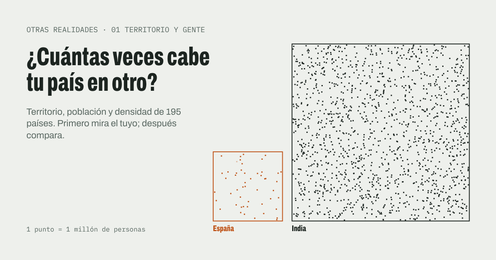
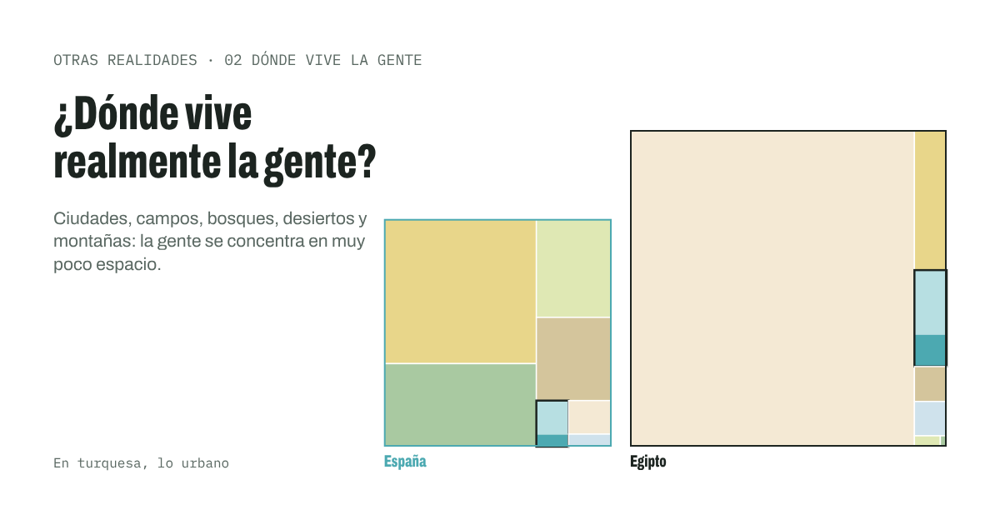
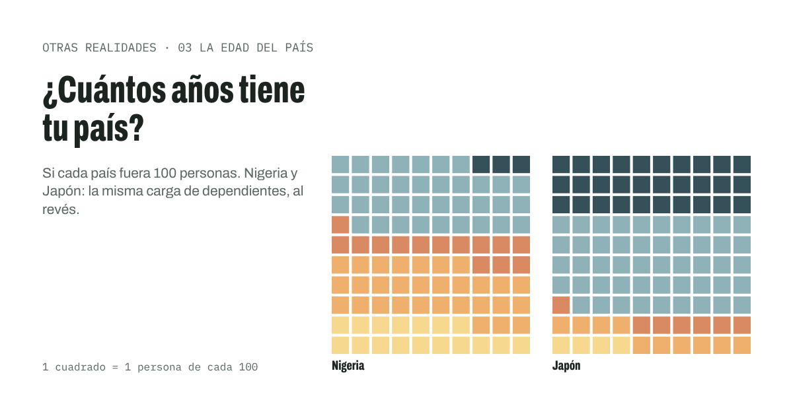

Otras realidades
Ejercicios visuales para entender realidades de otros países. Cada uno empieza por el tuyo: su tamaño, su gente, sus problemas. Después compara, y piensa qué haría falta para que una solución funcione en otro lugar.
Interactive visual exercises on the realities of other countries. Start with your own, then compare. In Spanish.
-

01Territorio y gente¿Cuánto espacio le toca a cada persona? Compara el territorio y la población de tu país con cualquier otro del mundo. Abrir el ejercicio → -

02Dónde vive la genteLa densidad media engaña. Descubre qué parte de cada país es urbana, dónde vive su gente y qué retos impone su territorio. Abrir el ejercicio → -

03La edad del paísSi tu país fuera 100 personas: cuántas son niños, jóvenes, adultos o mayores, y qué servicios necesita cada etapa de la vida. Abrir el ejercicio →
Próximamente
- 04 Lo que viene: 2050
- 05 Presupuesto por persona
- 06 Geografía que no se ve en el mapa
- 07 Tiempo histórico
- 08 Diversidad interna